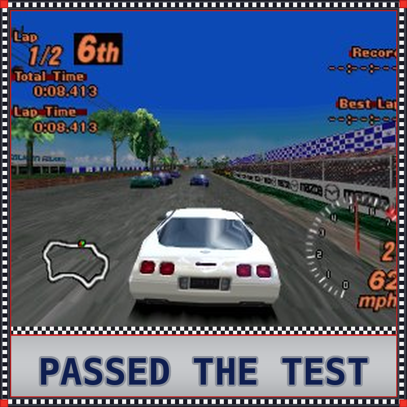
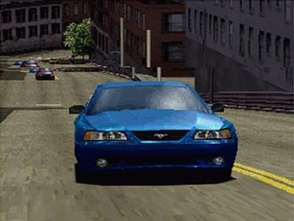
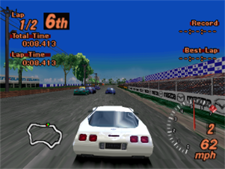
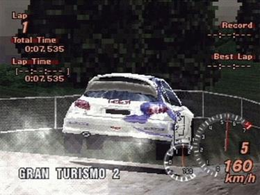
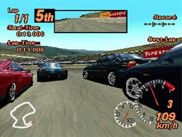

Gran Turismo 2
A comprehensive racing simulation featuring over 500 authentic vehicles and 20+ detailed tracks with 40+ combinations. The game includes Arcade and Simulation modes, rally racing, a deep license test system, and extensive vehicle customization. Players can tune everything from handling to drivetrain with realistic engine sounds. One of the best-selling racing games of all time with 9.37 million copies sold worldwide.
 (Simulation Mode).png)
| Platform | Sony PlayStation |
|---|---|
| Genre | Racing Simulation |
| Released | |
| Developer | Polyphony Digital |
| Publisher | Sony Computer Entertainment |
| Available | PlayStation |
Where to Play
About This Game
Gran Turismo 2 was developed by Polyphony Digital under the obsessive direction of Kazunori Yamauchi and released for the PlayStation in 1999. Building on the foundation of the original Gran Turismo—which had become the best-selling PlayStation game of all time—the sequel expanded the car roster from around 180 to over 650 vehicles, spanning decades of automotive history. The game shipped on two discs: an Arcade Mode disc for quick races and a Simulation Mode disc containing the deep career progression that defined the series.
Development was notoriously troubled, with the game shipping in a somewhat unfinished state—certain endgame events couldn't be completed, and the completion percentage was capped below 100% in some versions. Despite these issues, Gran Turismo 2 was a massive commercial success, selling over 9.37 million copies worldwide. Yamauchi's fanatical attention to automotive detail—from accurate engine sounds to real-world track recreations—established a new benchmark for racing simulation that influenced every driving game that followed. The game's rally racing mode, set across dirt and snow tracks, was a particularly beloved addition that showcased the engine's versatility.
Did You Know?
- The game shipped unfinished — Gran Turismo 2 was rushed to meet the 1999 holiday season. Several endgame events couldn't be completed, and the simulation mode's completion percentage was capped at 98.2% in the original release due to missing race data.
- Over 650 cars from 34 manufacturers — GT2 more than tripled its predecessor's car count. Kazunori Yamauchi's team individually modeled each vehicle, recording real engine sounds from actual cars at Polyphony Digital's in-house audio studio.
- It introduced rally racing to the series — GT2 added dirt and gravel rally stages for the first time, complete with different surface physics and handling characteristics. This became a fan-favorite feature that carried through the rest of the franchise.
- Two discs, two games — The Arcade Mode disc and Simulation Mode disc were essentially separate experiences. The Arcade disc could be played without a memory card, while the Simulation disc contained the full career mode with over 100 hours of content.
Critical Reception
Accolades
- 93/100 Metacritic score — Metacritic, 1999
- #8 Best PS1 Game of All Time — IGN, 2000
- 9.37 million copies sold worldwide — Polyphony Digital
Club Achievements

Beat the Game
GoldOther Participants
No participants yet.
Speedrun Records
Gran Turismo 2 speedruns focus on completing the Simulation Mode career as fast as possible. Runners exploit car purchases, race strategies, and prize money optimization to blaze through the license tests and championship events.
Soundtrack
Composed by Isamu Ohira & Masahiro Andoh
Gran Turismo 2 features a mix of licensed tracks and original compositions. The in-game music blends jazz fusion, electronic, and rock to create an energetic backdrop for racing. The menu themes are particularly iconic, with smooth jazz arrangements that became synonymous with the series' sophisticated identity.
Notable Tracks
- My Home (Main Menu Theme)
- From the East
- Moon Over the Castle
- Race Menu Theme
- License Test Theme
- Rally Stage Theme
Screenshots




Screenshots via LaunchBox Games Database
Sources & Attribution
- Game description and historical background adapted from Wikipedia
- Trivia sourced from Gran Turismo Wiki and community research
- Review scores from IGN, GameSpot, and Famitsu
- Metacritic aggregate from Metacritic
- Speedrun data from Speedrun.com
- Playtime estimates from HowLongToBeat
- Screenshots and box art via LaunchBox Games Database
- Soundtrack information from KHInsider
- Pricing data from PriceCharting